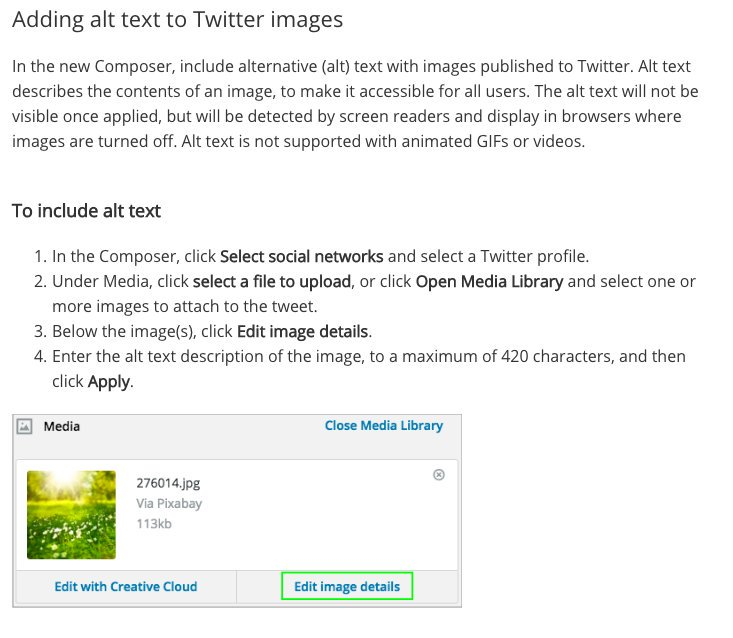

Social Media and Accessibility
Carly Gerard
Web Accessibility Developer, WebTech

Why do we post/tweet/Insta? ü§î
"Social networking is the same thing we‚Äôve been doing for more than a century here at Western: engaging with our communities."—Western Social Media Guidelines
But what about...
- your users with visual disabilities?
- your users in a noisy restaurant, trying to share a video with friends?
- your users with cognitive, learning, or reading disabilities?
What Makes Good Alt Text?
Generally speaking:
- Alt text succinctly describes what is happening in the image
- If it's an image of text, place the image text in the alt text
- Most important information is at the beginning of alt text
Why You Need Alt Text
Accessible Images
Facebook and Twitter have supported alt text for a while. Now Instagram does too! üëç
Adding Alt Text
- Click Photo/Video at the top of your News Feed.
- Select the photo you want to add.
- Click Edit Photo, then click Alt Text.
- The automatically generated text will be shown on the left side of your photo. Click Override generated alt text to edit it.
- Write your alt text in the box. To change back to the automatically generated text, click Clear.
- To save your alt text, click Save in the bottom right.
- Click on the Tweet compose button, or press the “n” key to use the keyboard shortcut.
- Attach your photo(s).
- To insert descriptive text, open the thumbnail preview dialog by clicking on the thumbnail.
- Type your description of the image and click the Apply button. To edit the description, re-open the thumbnail preview dialog prior to posting the Tweet. (The limit is 420 characters.)
- You can add a description to each image in a Tweet. Note: Image descriptions cannot be added to GIFs or videos.
- Start by taking a photo or uploading an existing photo to Instagram.
- Choose a filter and edit the image, then tap Next.
- Tap Advanced Settings at the bottom of the screen.
- Tap Write Alt Text.
- Write your alt text in the box and tap Done (iOS) or Save (Android).
Adding Alt Text (Continued)
Alt Text Resources
Hootsuite and Alt Text

Some Current Hootsuite Pitfalls
- Hootsuite has the same 420 character limit for alt text
- Only works in the new Composer/New Post feature
- No alt text support in mobile Hootsuite apps
- Also no documentation on alt text support for Facebook/Instagram?
Videos
- Twitter and Instagram require open captions (burned into file) to have captions
- Otherwise, link to another version on a platform where closed captions are provided
- Facebook supports closed captioning. Facebook Help Center: Add or Remove Captions
- 3Play offers Facebook SRT files to upload into Facebook
Videos (Continued)
Audio Description
Other Important Considerations
- Provide contact info to key points of contact on each profile so users have an alternate way to reach out
- Post same info to multiple outlets—repeat content for various user populations.